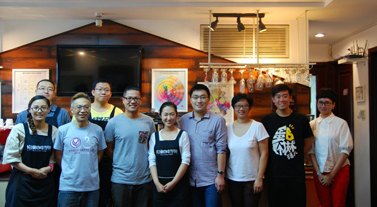

一：C301 咖啡烘焙的基础理论 1）从精品咖啡发展趋势
谈咖啡烘焙的兴起 2）咖啡烘焙的基本概念 3）烘焙师的
思考：创造什么风味？怎样创造风味？ 4）如何检验烘焙
样品的风味 5）传热学基础知识入门 6）解析热量传递的
三种方式（对流 Convection、传导 Contact、辐射
Radiation） 7）烘焙机基本分类、模型框架以及优劣分
析 8）烘焙中影响热传递的基本因素 9）半热风式滚筒烘
焙机的基本结构、部件功能、工作流程及关键要素 10）
关于咖啡烘焙的准备工作 11）咖啡烘焙的一般流程及注
意事项（含基本清洁维护） 12）解读咖啡烘焙的各个阶
段：下豆入锅、探底回温、脱水蒸焙、正式烘焙、一爆发
展、下豆出锅、快速冷却。 13）八大基本烘焙程度描述
